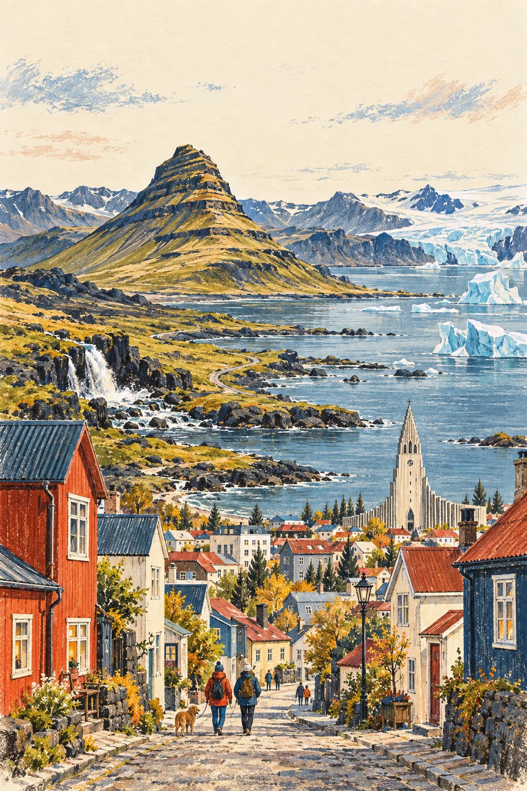
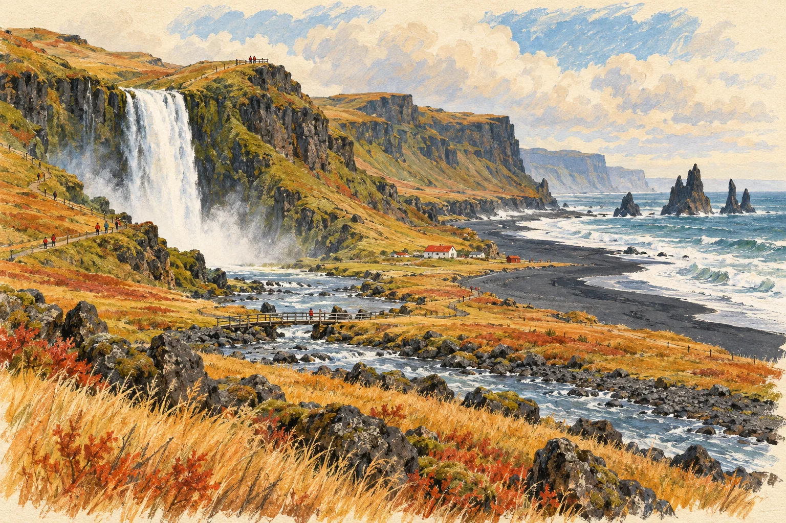
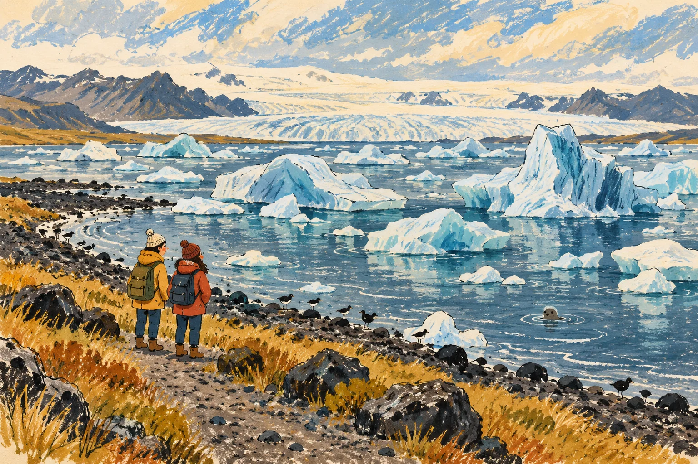
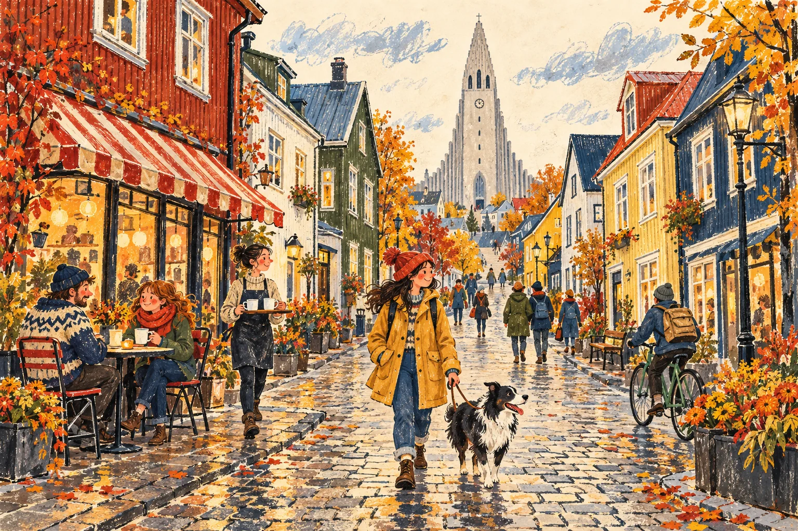

DAY01第 1 週
暖水之後，往 Borgarnes
抵達與恢復精神優先，路線可以縮短。
- 主要選項Blue Lagoon
先查開放情況、入場要求與交通安排。
- 移動方向Borgarnes
在天候與精神允許時往西部移動，途中保留補給與休息。
若疲倦或天候不佳，減少行程並休息。
LANDSCAPE JOURNAL
穿過山海與冰藍色，走回有燈的小城。
ICELAND · A LANDSCAPE JOURNAL
用相對日程，收藏路上的風景。

這是一份重新編排的公開旅行示例。Day 1 起的日程與第 1 週起的週次皆為相對順序，可自由刪減、替換或分成多次旅行。景點開放、活動資格、交通與天候請以出發前的官方資訊為準。
FIND YOUR DAY
國家、相對週次與 Day 索引，搭配搜尋使用。
共 10 張示例日程卡
01 / LANDSCAPES & DAYS
每週從 Day 1、Day 8 起順序分組；不對應實際日曆。
第一段，留給休息與冰島的第一眼。
抵達與恢復精神優先，路線可以縮短。
先查開放情況、入場要求與交通安排。
在天候與精神允許時往西部移動，途中保留補給與休息。
若疲倦或天候不佳，減少行程並休息。

看山影、望海岸，在小鎮停一杯咖啡的時間。

瀑布、黑沙與遠方的冰河，把腳步放輕。
主景點選少一點，讓路上更從容。
注意風、水霧與地面狀況，結冰時縮短步行。
步道安全、時間足夠時才加入。
有餘裕時在小鎮停留，風大時避開暴露區域。
把下午留給移動，少排支線。
遵從現場警示與封閉，遠離海浪；不合適就取消。
中途只安排必要休息與補給。
天光、風浪與現場安全狀況允許才短停。
不可因拍照靠近海浪或跨越警戒。

看風景，也為旅途留下舒適的空白。
留一整天給冰河湖區，也可以休息。
短程散步與觀景，天候變化時提早回程。
先查業者當季營運、參加資格、裝備與天候取消機制。
不要自行進入冰洞或走上冰河；活動由合格業者依當日條件決定。

一杯熱咖啡，一段街角，收好這些風景。
不必在同一天完成整個黃金圈。
留意步道與現場安全指示。
依日照、路況與體力取捨。
天候變差時刪去支線，直接回到城市。
彩色街屋與低強度散步。
以步行方便的街區為主。
Reykjavík Roasters、Brauð & Co 與 Bæjarins Beztu 可按動線選擇。
把購物與散步集中在容易抵達的地方。
沒有符合這組條件的日程。試試其他地區或清除篩選。
02 / FIELD NOTES
移動日減少停點，為路上休息留下餘裕。遇到警示、封閉或不舒服的天候，就調整路線。
本指南的景點是選項。活動、季節開放、參加資格與交通安排，使用前請查官方頁面。
每天選一個主要重點即可；其餘依時間、天氣與體力調整。也可以把整天留白。
03 / TRAVEL LIGHT
一般用品參考，可按旅程調整。勾選僅保留在目前瀏覽器。
這份公開指南以景點與路線靈感為主，使用相對日程呈現。所有風景插畫均為原創旅行插畫，並非住宿實景、導航地圖或現場照片。
本頁不載入外部追蹤程式。官方資訊連結會在新分頁開啟；網路服務的內容與規則可能更新。